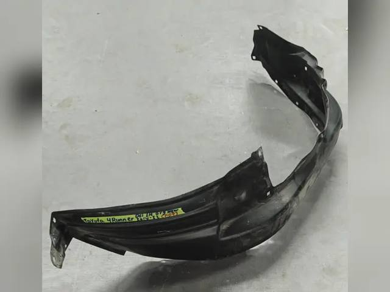
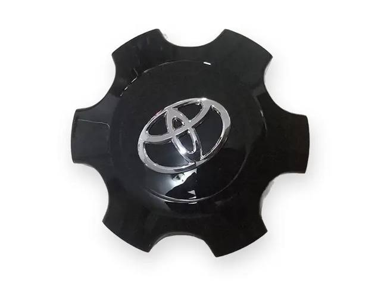

Piezas de carrocería para Toyota 4Runner
15 piezas disponibles hoy para Toyota 4Runner, cada una con su foto y su código: parrillas (3), faros y lámparas delanteras (2), cubrepolvos (2), accesorios nuevos (2). Dinos el año de tu carro y te confirmamos si le sirve.
- Garantía de 3 días
- Foto real de cada pieza
- Efectivo, Yappy o ACH
- Lunes a sábado, 8:00 a. m. a 5:00 p. m.
Parrillas para Toyota 4Runner 3
 5384Runner
5384Runner 5894Runner
5894RunnerFaros y lámparas delanteras para Toyota 4Runner 2
 1314Runner
1314Runner LD0214Runner
LD0214RunnerCubrepolvos para Toyota 4Runner 2
 CP0494Runner2010-24 · lado izquierdo · original
CP0494Runner2010-24 · lado izquierdo · original
CP0934Runner2010-24 · lado izquierdo · original nuevoAccesorios nuevos para Toyota 4Runner 2
 EN004Tapa DE Rin Fortuner / 4Runner Gris2016-26
EN004Tapa DE Rin Fortuner / 4Runner Gris2016-26
EN005Tapa DE Rin Fortuner / 4Runner Negra2016-26 CH1464Runner
CH1464Runner CH1554Runner
CH1554Runner 2264Runner
2264Runner 7894Runner
7894Runner FL1774Runner
FL1774Runner